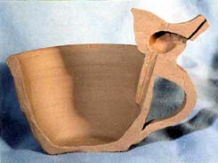
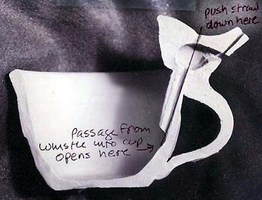
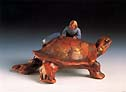
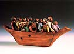

| How
to Make a Nightingale Cup
by Delia Robinson

This is essentially an open vessel water whistle. It holds pride
of
place among all unusual cups for its charming voice.
1. Make Make a mug or cup. Keep the walls a little thick. Before
it is leather hard attach the handle. The top of the handle should
be even with the lip of the cup. Drape it with plastic to prevent
drying while complete step two.
2. Pull out your November l993 Ceramics Monthly, page 90, and
follow the directions to make a whistle. For a small whistle, use
your little finger or the eraser end of a pencil to form the pinch
pot.
3. Position the whistle on the handle so it is directly over the
cup wall. ou may want to slice some of the whistle bottom off so
it sits snugly at the handle and cup junction.
4. Push a small hole making tool (I use a juice box straw or the
plastic tube from inside of a ball point pen) down through the whistle,
continuing to burrow inside the cup wall below the whistle. Emerge
from inside the wall into the cup several inches down on the inside
of the vessel. Remove all rubble pushed out by the straw. Patch
any cracks in the cup wall while keeping the straw in place. This
will assure that the tunnel stays open while you are making the
cup wall presentable. If you have made the wall too thin the entire
area under the handle will
need a patch.

5. Carefully remove the straw. You have created a hollow tube through
the clay, running from the top of the whistle down through the cup
wall and out into the cup bowl.
6. Plug the hole on the top of the whistle left by the hole maker
or leave it for an extra note.
7. Sound the whistle. Make any necessary adjustments to get a
clear tone. Be careful to handle everything gently to avoid collapsing
the internal cavities.
8. After bisque firing, put wax or plasticine in the whistle openings,
including inside the bowl of the cup. When these are safely plugged,
glaze as usual. When the glaze is dry, unplug the whistle openings
removing any crusts of glaze left clinging that might occlude the
holes. Glaze fire.
9. Now to try the sound, fill the cup with fluid. The opening
inside the bowl should be under water. Blow into the whistle, the
bowl should be under water. Blow into the whistle, varying your
breath. The lovely clear liquid voice of the nightingale will ring
out.

Article courtesy of Delia Robinson.
© Delia Robinson
Related Articles
How to Make a Puzzle Mug
In Their Cups - The Story of the English
Puzzle Mug
How to Make a Clay Whistle
More Articles |
{kind=link}
{kind=link}